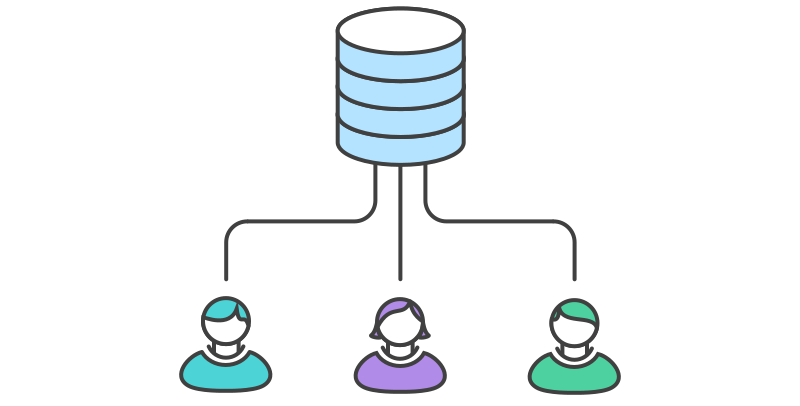

<!doctype html>
<html lang="en">

<head>
    <meta charset="utf-8">

    <title>Pull Request Training</title>

    <link rel="stylesheet" href="dist/reveal.css">
    <link rel="stylesheet" href="dist/theme/sky.css" id="theme">

    <link rel="stylesheet" href="plugin/highlight/monokai.css">
</head>

<body>

    <div class="reveal">

        <div class="slides">

            <!-- Use external markdown resource, separate slides by three newlines; vertical slides by two newlines -->
            <!-- <section data-markdown="markdown.md" data-separator="^\n\n\n" data-separator-vertical="^\n\n"></section> -->

            <!-- Slides are separated by three dashes (quick 'n dirty regular expression) -->
            <section data-markdown data-separator="---">
                <script type="text/template">

## Pull Request Workflow
Improving Code Quality with 

GIT Integrated Review Tools

---
## What is a Pull Request?

- Third Party Workflow Tool Supporting GIT

- Communicate Changes to Team Members

- Enables Formal Code Reviews (Four Eyes)

- Supported by BitBucket Server

- You Don't Merge Your Own Changes

---
## Why a Process Change?

- [Code Reviews Improve Quality](https://en.wikipedia.org/wiki/Code_review)

- Most teams already do code reviews

- Process tooling was not available (SVN)

- Upcoming GIT migration to BitBucket

- Pull Requests streamline code review process

--- 
## Upcoming GIT Migration

- Motivated by Framework Migration

- Task is in progress

- "Go Live" November 2021 SP8 Branching

---
## Further Reading

- This is NOT a GIT tutorial

- [Practical Usage Tutorial from Atlassian](https://www.atlassian.com/git/tutorials/what-is-version-control)

- [Official Deeply Technical Manual](https://git-scm.com/book/en/v2)

---
## Modern Workflows

- SVN with Manual Review 😂

- [Centralized Workflow](https://www.atlassian.com/git/tutorials/comparing-workflows#centralized-workflow) (working on main)

- [Fork Based Workflow](https://www.atlassian.com/git/tutorials/comparing-workflows/forking-workflow) (Open Source)

- [Feature Branch Workflow](https://www.atlassian.com/git/tutorials/comparing-workflows/feature-branch-workflow) (our target)

---
## Centralized Workflow

### Basic GIT
#### Nothing to do with reviews

1. Clone / Pull / Fetch
2. Edit on local repository main branch
3. Add  files and commit
5. Push (optional manual review before)
6. 🥺 Pull / Rebase & FFwd / Push again

---
## Forking Workflow 
### (Open Source / Github Model)

#### Everyone working on own repo (main branch)
#### Maintainer merges your main branch into Official


---
## Feature Branch Workflow

#### Shared repository
#### Branch Per Feature

<style>
.container{
    display: flex;
}
.col{
    flex: 1;
}
</style>

<div class="container">

<div class="col">

</div>

<div class="col">

</div>

</div>

### Reviewer Merges!

---
## Where is the Pull Request?

---
## Demo

--- 
Tools

---
Clone

---
Branch

---
Edit

---
add / commit

---
push branch remote

---
Write Pull Request

---


## 
                    </script>
            </section>

            <!-- Slides are separated by newline + three dashes + newline, vertical slides identical but two dashes -->
            <section data-markdown data-separator="^\n---\n$" data-separator-vertical="^\n--\n$">
                <script type="text/template">
                        ## Demo 2
                        Slide 1.1

                        --

                        ## Demo 2
                        Slide 1.2

                        ---

                        ## Demo 2
                        Slide 2
                    </script>
            </section>

            <!-- No "extra" slides, since there are no separators defined (so they'll become horizontal rulers) -->
            <section data-markdown>
                <script type="text/template">
                        A

                        ---

                        B

                        ---

                        C
                    </script>
            </section>

            <!-- Slide attributes -->
            <section data-markdown>
                <script type="text/template">
                        <!-- .slide: data-background="#000000" -->
                        ## Slide attributes
                    </script>
            </section>

            <!-- Element attributes -->
            <section data-markdown>
                <script type="text/template">
                        ## Element attributes
                        - Item 1 <!-- .element: class="fragment" data-fragment-index="2" -->
                        - Item 2 <!-- .element: class="fragment" data-fragment-index="1" -->
                    </script>
            </section>

            <!-- Code -->
            <section data-markdown>
                <script type="text/template">
                        ```php [1|3-5]
                        public function foo()
                        {
                            $foo = array(
                                'bar' => 'bar'
                            )
                        }
                        ```
                    </script>
            </section>

            <!-- Images -->
            <section data-markdown>
                <script type="text/template">
                        
                    </script>
            </section>

        </div>
    </div>

    <script src="dist/reveal.js"></script>
    <script src="plugin/markdown/markdown.js"></script>
    <script src="plugin/highlight/highlight.js"></script>
    <script src="plugin/notes/notes.js"></script>

    <script>

        Reveal.initialize({
            controls: true,
            progress: true,
            history: true,
            center: true,

            plugins: [RevealMarkdown, RevealHighlight, RevealNotes]
        });

    </script>

</body>

</html>